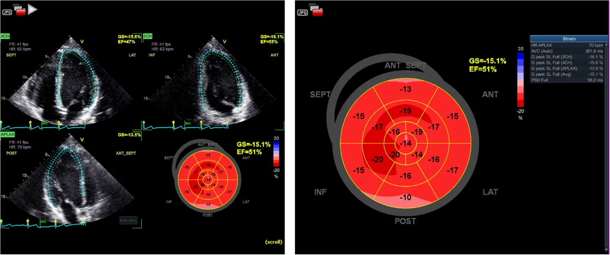
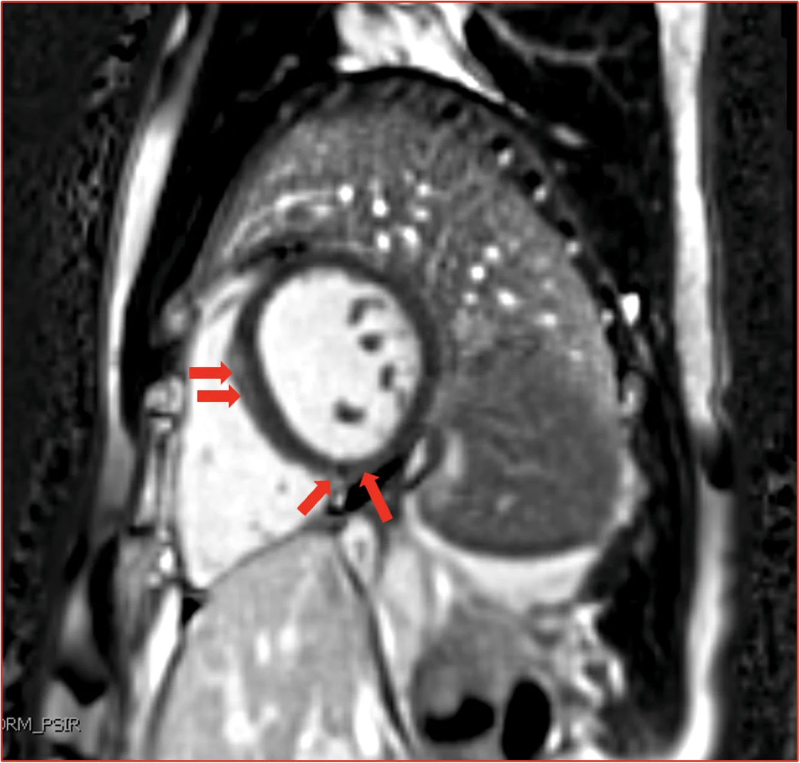
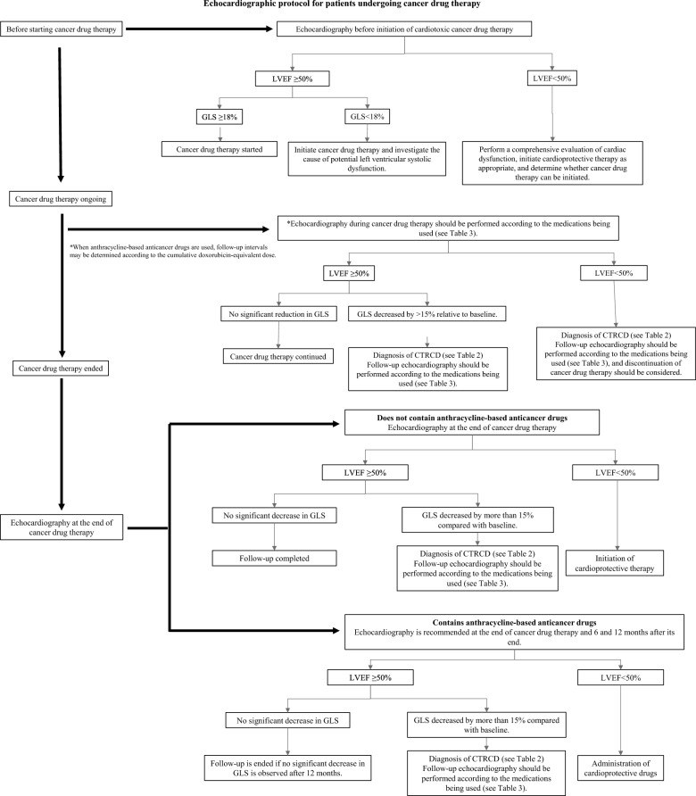
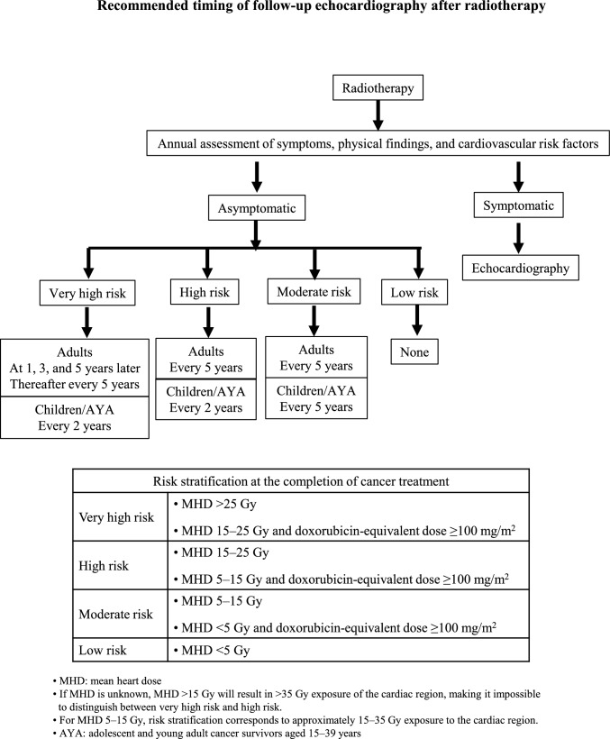

6703 — Bệnh cơ tim do anthracycline ở người sống sót ung thư nhi: GLS, CTRCD, MRI tim và ngưỡng khởi trị / Anthracycline cardiomyopathy in childhood cancer survivors
Tags: pattern:ctrcd pattern:suy-tim pattern:roi-loan-chuc-nang-that-trai pattern:lge-midmyocardial vung:tim score:CTRCD-ESC score:CTCAE score:IGHG protocol:sie-u-am-GLS protocol:MRI-tim
Mức chắc chắn (certainty): tổng hợp y văn (literature synthesis) + ca nguyên văn (verbatim case) — nam 26 tuổi, lymphoma Burkitt ở 5 tuổi, doxorubicin 120 mg/m², EF 55–60% nhưng GLS −15%, MRI tim có LGE giữa thành vách (Chedid M et al., JACC Case Rep 2026, PMC13699096); đối chiếu hướng dẫn siêu âm tim CTRCD 2026 (Tanaka H et al., J Echocardiogr 2026, PMC13222306), tổng quan người sống sót nhi (Leerink JM et al., JACC CardioOncol 2020, PMC8352294), tổng quan MRI tim (Motevalli M et al., BMC Med Imaging 2025, PMC12628630) và hướng dẫn mang thai ở người sống sót (Bansal N et al., J Cardiovasc Dev Dis 2022, PMC9695103).
1. Tổng quan — vì sao một liều thuốc ở tuổi lên 5 lại quyết định trái tim ở tuổi 26
- Anthracycline (doxorubicin, daunorubicin, epirubicin, mitoxantrone) gây chết tế bào cơ tim theo cơ chế tích lũy, không hồi phục: phức hợp topoisomerase 2β → đứt sợi DNA và chết tế bào cơ tim; kèm stress oxy hóa do vòng khử–oxy hóa của quinone và rối loạn sắt ty thể. Cơ tim gần như không tái sinh → mỗi đợt mất tế bào là mất vĩnh viễn, thay bằng xơ hóa mô kẽ lan tỏa.
- Hệ quả hình ảnh (TẠI SAO phải đọc mô, không chỉ đọc EF): mô kẽ tăng → native T1 tăng, ECV tăng, T2 tăng; nhưng vì xơ hóa lan tỏa chứ không thành ổ, LGE thường ÂM TÍNH. EF chỉ giảm khi đã mất một lượng lớn cơ tim co bóp → EF là biến muộn, GLS là biến sớm (sợi dọc dưới nội tâm mạc là nơi chịu lực cắt lớn nhất và tổn thương sớm nhất).
- Không có ngưỡng liều "an toàn": ca dưới đây chỉ 120 mg/m² — dưới ngưỡng "nguy cơ cao 250 mg/m²" của hướng dẫn — mà vẫn có GLS bất thường và LGE ở tuổi 26. Ngược lại, hướng dẫn dùng 250 mg/m² để phân tầng theo dõi, không phải để nói "dưới ngưỡng thì yên tâm".
- Dịch tễ định lượng (người sống sót ung thư nhi — CCS):
- Suy tim (độ 3–5) tích lũy 4,8% đến tuổi 45 (Childhood Cancer Survivor Study — CCSS); đoàn hệ Hà Lan LATER ghi nhận 10,6%.
- Bệnh mạch vành tích lũy 5,3% đến tuổi 45; nam xạ ngực > 35 Gy lên tới 20% ở tuổi 50.
- Loạn nhịp có triệu chứng 1,3% đến tuổi 45 (10.724 CCS); yếu tố nguy cơ gồm anthracycline ≥ 250 mg/m², xạ ngực > 35 Gy, rối loạn lipid, tăng huyết áp.
- Phân tầng nguy cơ của IGHG (International Late Effects of Childhood Cancer Guideline Harmonization Group) — dùng để đặt lịch, không để chẩn đoán:
| Nhóm | Tiêu chí | Theo dõi siêu âm |
|---|---|---|
| Nguy cơ cao | Anthracycline ≥ 250 mg/m²; hoặc xạ ngực ≥ 35 Gy; hoặc anthracycline ≥ 100 mg/m² + xạ ngực ≥ 15 Gy | Mỗi 5 năm hoặc sớm hơn (khuyến cáo mạnh) |
| Nguy cơ trung bình | Anthracycline 100–250 mg/m²; hoặc xạ ngực 15–35 Gy | Mỗi 5 năm (hợp lý) |
| Nguy cơ thấp | Anthracycline < 100 mg/m² | Cân nhắc, không dày |
- Vì sao hình ảnh học (chứ không phải xét nghiệm máu) là trụ: troponin/NT-proBNP có thể bình thường ở thể muộn (ca dưới đây bình thường cả hai); ECG và Holter có thể bình thường dù cơ tim đã xơ. Chẩn đoán dựa trên siêu âm (LVEF 3D + GLS) và MRI tim khi cần phân định mô.

Siêu âm đánh dấu mô (speckle tracking) ở nam 26 tuổi: EF 55–60% nhưng GLS −15% — "EF bình thường, cơ tim không bình thường". Đây là lý do GLS phải đo ở mọi lần theo dõi, không chỉ EF. Ảnh: Chedid M et al., JACC Case Rep 2026;31:110273 (PMC13699096, Fig. 1), CC BY-NC-ND 4.0 (nguyên bản).2. Mẫu hình + chẩn đoán phân biệt theo vị trí (Gamut)
- Mẫu hình A — "người trẻ, nhiều năm sau hóa trị, đau ngực/thồi hồi trống ngực, EF bảo tồn": nghĩ CTRCD muộn (anthracycline); tìm GLS giảm, ECV/native T1 tăng, LGE giữa thành vách/bám thất phải.
- Mẫu hình B — "suy tim thực sự sau nhiều năm": thất trái giãn nhẹ, thành mỏng, EF < 50%, không có bệnh mạch vành; phân biệt bệnh cơ tim giãn vô căn (không tiền sử), bệnh cơ tim do xạ (vùng tưới máu trong trường chiếu, van dày), bệnh cơ tim chu sản.
- Mẫu hình C — "loạn nhịp + LGE + RV giãn ở người trẻ": cạm bẫy lớn — bệnh cơ tim loạn sản thất phải (ARVC) có cùng LGE vách/bám thất phải và loạn nhịp khi gắng sức. Ca dưới đây đạt tiêu chuẩn phụ của ARVC nhưng bản chất là anthracycline.
- Mẫu hình D — "thiếu máu cơ tim khi gắng sức": bất thường tưới máu, QRS giãn khi gắng sức có thể do giảm dự trữ co bóp, không phải hẹp mạch vành — phải loại trừ mạch vành (CTA mạch vành) trước khi kết luận.
- Mẫu hình E — "suy tim hai buồng thất + hạ oxy": nghĩ quá tải sắt (truyền máu nhiều), bệnh cơ tim do xạ, bệnh phổi mạn; MRI T2* là chốt.
- Mẫu hình F — "mang thai làm bộc lộ": người sống sót nữ có tiền sử anthracycline, suy tim quanh sinh — cần đánh giá trước khi có thai (bài 490 cho khung mắt; khung tim ở mục 4.4).

MRI tim thì muộn: LGE giữa thành (midmyocardial) vách liên thất và bám thất phải dưới (mũi tên) — không theo lãnh thổ mạch vành. Ở một người trẻ có loạn nhịp, hình này bắt chước ARVC; chốt phân biệt là tiền sử anthracycline + ECV/T1 toàn ổ + không giãn thất phải điển hình. Ảnh: Chedid M et al., JACC Case Rep 2026 (PMC13699096, Fig. 2), CC BY-NC-ND 4.0 (nguyên bản).3. Bảng so sánh phân biệt (ma trận đối chiếu)
| Thực thể | Hình ảnh điển hình (siêu âm / MRI tim) | Chốt vào (rule-in) | Chốt loại (rule-out) | Gợi ý xác nhận |
|---|---|---|---|---|
| CTRCD do anthracycline (muộn) | EF có thể còn 55–60%; GLS giảm; MRI: ECV/native T1 tăng lan tỏa, LGE thường âm, đôi khi LGE giữa thành vách | Tiền sử anthracycline (kể cả 120 mg/m²) + ΔGLS > 15% hoặc EF giảm; xơ hóa lan tỏa | Không phơi nhiễm, bệnh mạch vành rõ, van bệnh nặng → nguyên nhân khác | Siêu âm 3D + GLS; MRI tim T1/ECV; đối chiếu liều mg/m² |
| ARVC | RV giãn/giảm chức năng khu trú, akinesia/dyskinesia, LGE bám thất phải; loạn nhịp thất khi gắng sức | Tiêu chuẩn Task Force ARVC (điện tim, loạn nhịp, MRI, gia đình/gen) | LVEF/GLS giảm toàn bộ + xơ hóa lan tỏa + tiền sử hóa trị → nghi CTRCD hơn | MRI tim (RV, LGE), Holter, gen PKP2/DSG2; không đặt ICD khi chưa chắc |
| Bệnh cơ tim giãn vô căn | LV giãn, thành mỏng, EF giảm toàn bộ, không LGE hoặc LGE vách giữa | Loại trừ nguyên nhân (mạch vành, thuốc, rượu, virus, gia đình) | Tiền sử anthracycline rõ, xơ hóa mô kẽ tăng → CTRCD | Bệnh sử, gen, MRI; không có "xét nghiệm vàng" |
| Bệnh cơ tim do xạ | Van dày/hẹp, màng tim dày, xơ hóa vùng trong trường chiếu, mạch vành hẹp đoạn xa | Xạ ngực ≥ 15–35 Gy, tổn thương trong trường chiếu | Tổn thương lan tỏa, không tương ứng trường chiếu → CTRCD | Sơ đồ xạ trị, CTA mạch vành, MRI (LGE theo vùng) |
| Viêm cơ tim | Phù (T2 cao) + LGE dưới thượng tâm mạc/giữa thành, EF giảm cấp | Khởi phát cấp–bán cấp, troponin tăng, triệu chứng nhiễm | Tiến triển nhiều năm, troponin bình thường → CTRCD muộn | MRI theo Lake Louise; troponin; hỏi thuốc/ICI |
| Thiếu máu cơ tim | Khuyết tưới máu theo lãnh thổ, LGE dưới nội tâm mạc → xuyên thành, EF giảm vùng | CTA/ chụp mạch vành có hẹp, đau khi gắng sức điển hình | Mạch vành sạch, LGE giữa thành → không do thiếu máu | CTA mạch vành; SPECT/PET; ca dưới đây đã loại trừ |
| Quá tải sắt | T2 giảm*, EF giảm, gan/lách tăng tín hiệu | Nhiều lần truyền máu, ferritin cao | T2* bình thường → không phải | MRI T2*; ferritin |
| Bệnh cơ tim chu sản | LV giãn, EF giảm trong tháng cuối thai – 5 tháng sau sinh | Thai kỳ/sinh trong cửa sổ thời gian | Xảy ra nhiều năm trước/sau sinh → không phải | Siêu âm; tiền sử sản khoa; phối hợp tim–sản |
- Phân biệt cốt lõi: tiền sử anthracycline (ghi bằng mg/m²) + GLS giảm khi EF còn bảo tồn + xơ hóa lan tỏa; LGE giữa thành/không theo lãnh thổ không loại trừ CTRCD và không đủ để gọi ARVC.
4. Protocol theo dõi + phân độ + sơ đồ quyết định
4.1. Định nghĩa CTRCD (ESC 2022 / CTCAE v6.0 — dùng đúng ngưỡng)
| Mức | Tiêu chuẩn |
|---|---|
| Nhẹ (mild) | LVEF ≥ 50% và ΔGLS giảm tương đối > 15% so với nền và/hoặc biomarker mới tăng (cTnI/cTnT > bách phân vị 99; BNP ≥ 35 pg/mL; NT-proBNP ≥ 125 pg/mL) |
| Trung bình (moderate) | LVEF 40–49% và giảm ≥ 10% so với nền; hoặc giảm < 10% nhưng có ΔGLS > 15%/biomarker tăng |
| Nặng (severe) | LVEF mới < 40%; có triệu chứng cần nhập viện = nặng có triệu chứng |
| Rất nặng | Sốc tim, cần inotrope/hỗ trợ tuần hoàn, hoặc phải xét ghép tim |
- Ngưỡng GLS: giảm tương đối > 15% được coi là bất thường; giảm < 8% thường không có ý nghĩa lâm sàng — đừng "chase" dao động nhỏ giữa các lần đo/khác máy.
4.2. Lịch chụp (theo nguy cơ)

Thuật toán 2026: nền (LVEF 3D + GLS + biomarker) → trong điều trị theo nguy cơ và theo chu kỳ → sau điều trị theo lịch sống sót. Điểm cần nhớ: mốc 250 mg/m² là ngưỡng bắt buộc siêu âm, không phải ngưỡng "an toàn". Ảnh: Tanaka H et al., J Echocardiogr 2026;24:123–140 (PMC13222306, Fig. 1), CC BY 4.0.- Trước điều trị (nền): LVEF (ưu tiên 3D, tối thiểu Simpson 2D) + GLS + troponin/NT-proBNP + ECG.
- Trong điều trị: nguy cơ thấp/trung bình — trước, sau chu kỳ 4, 1 năm; nguy cơ cao — trước, sau chu kỳ 2, 4, 6, 3 tháng, 1 năm.
- Bắt buộc siêu âm khi tổng liều doxorubicin quy đổi > 250 mg/m², kể cả nhóm nguy cơ thấp/trung bình; lặp lại khi tăng liều.
- Sau điều trị (sống sót): IGHG — nguy cơ cao mỗi 5 năm hoặc sớm hơn; trung bình mỗi 5 năm. Với trẻ/người trẻ (children/AYA) đã xạ trị, bảng của Hội Siêu âm Nhật 2026 khuyến cáo dày hơn (mỗi 2 năm ở nhóm rất cao/nguy cơ cao) — xem hình dưới.

Bảng của Hội Siêu âm Tim Nhật Bản 2026: phân tầng theo liều tim trung bình (MHD) và liều doxorubicin quy đổi, kèm lịch siêu âm — người lớn nguy cơ rất cao: 1, 3, 5 năm rồi mỗi 5 năm; trẻ/AYA: mỗi 2 năm. Lưu ý dòng "nếu MHD 5–15 Gy, phân tầng tương ứng 15–35 Gy cho vùng tim" — không được cộng sai liều. Ảnh: Tanaka H et al., J Echocardiogr 2026;24:123–140 (PMC13222306, Fig. 2), CC BY 4.0.4.3. Khi nào MRI tim (không thay siêu âm, mà để trả lời câu hỏi siêu âm không trả lời được)
- EF không khớp giữa các lần đo/2D vs 3D; không đủ cửa sổ ở người béo/xạ ngực.
- Cần định lượng mô: native T1, T2, ECV để phát hiện tổn thương lan tỏa không có LGE — đây là dấu sớm và tồn tại lâu ở người sống sót (T1/T2/ECV tăng; ECV và strain còn bất thường nhiều năm sau).
- Nghi bệnh khác: ARVC (RV), viêm cơ tim, sarcoid, quá tải sắt (T2*), bệnh cơ tim thâm nhiễm.
- Số liệu: tổng quan hệ thống MRI tim ở bệnh nhân anthracycline: T1/T2/ECV tăng ngay cả khi không có LGE; loạt 249 người sống sót (trung vị 2,9 năm sau hóa trị): rối loạn chức năng thất trái 69,9%, thất phải 21,7% (92,6% trong số đó kèm rối loạn thất trái), RVEF giảm gắn với biến cố tim mạch.
4.4. Điều trị và dự phòng (ngưỡng thực hành)
- CTRCD nhẹ (không triệu chứng, EF ≥ 50%, chỉ GLS/biomarker): tối ưu yếu tố nguy cơ (huyết áp, lipid, đường huyết, ngừng thuốc độc), theo dõi sát 2–4 tuần, cân nhắc ức chế men chuyển + chẹn beta — chưa có bằng chứng mạnh ở người sống sót nhi.
- CTRCD trung bình/nặng: khởi trị ức chế men chuyển (hoặc ARB) + chẹn beta, lợi tiểu khi ứ dịch; hội chẩn tim mạch–ung thư; ngừng/đổi phác đồ ung thư khi nặng.
- Dự phòng tiên phát: dexrazoxane không làm tăng suy tim lâm sàng trong RCT nhi, có thể giảm độc tính không triệu chứng, nhưng chưa dùng thường quy cho mọi trẻ (lo ngại giảm hiệu lực ung thư và ung thư thứ hai — bằng chứng chất lượng cao cho lo ngại này còn thiếu); các chiến lược khác: liposomal doxorubicin, truyền kéo dài, tránh liều tích lũy cao. Chẹn beta dự phòng ở người sống sót nhi đang được thử nghiệm (COG ALTE1621/PREVENT, carvedilol liều thấp) — chưa phải chuẩn.
- Thai kỳ: siêu âm đánh giá LVEF/GLS trước khi có thai cho mọi nữ sống sót đã dùng anthracycline ± xạ ngực; chức năng tim bình thường trước thai → nguy cơ suy tim khi mang thai thấp; đã có độc tính tim trước đó → nguy cơ cao, cần đội đa chuyên khoa (sản–tim–gây mê) theo dõi sát trong và sau sinh.
flowchart TD
A["Người sống sót ung thư nhi có tiền sử anthracycline"] --> B["Tính liều doxorubicin quy đổi mg/m2 + liều xạ ngực Gy"]
B --> C["Siêu âm nền: LVEF 3D + GLS; troponin, NT-proBNP; ECG"]
C --> D{"EF và GLS thế nào?"}
D -->|"EF ≥ 50%, ΔGLS ≤ 15%"| E["Theo dõi theo nguy cơ IGHG: cao mỗi 5 năm hoặc sớm hơn"]
D -->|"EF ≥ 50%, ΔGLS > 15% hoặc biomarker tăng"| F["CTRCD nhẹ: tối ưu yếu tố nguy cơ, siêu âm lại 2-4 tuần"]
D -->|"EF 40-49% hoặc < 40%"| G["CTRCD trung bình/nặng: ức chế men chuyển + chẹn beta; hội chẩn tim mạch"]
F --> H{"EF giảm tiếp hoặc nghi bệnh khác?"}
G --> H
H -->|"Có"| I["MRI tim: T1, T2, ECV, LGE, T2*; CTA mạch vành nếu nghi thiếu máu"]
H -->|"Không"| E
I --> J{"Nguyên nhân?"}
J -->|"Xơ hóa lan tỏa, LGE giữa thành, mạch vành sạch"| K["CTRCD muộn: điều trị suy tim, tránh gắng sức cực đoan"]
J -->|"LGE dưới nội tâm mạc theo lãnh thổ"| L["Bệnh mạch vành: điều trị thiếu máu"]
J -->|"RV giãn + loạn nhịp + LGE bám thất phải"| M["Cân nhắc ARVC: tiêu chuẩn Task Force, gen, không vội đặt ICD"]
5. Biến thể bình thường và cạm bẫy
- "EF 56% là bình thường" — sai nếu GLS −15%: ca dưới đây có EF 55–60% nhưng GLS −15%, MRI xác nhận LGE. GLS là chỉ số phải đo, và phải so với nền của chính bệnh nhân (nếu không có nền, dùng ngưỡng tuyệt đối tham chiếu theo tuổi/máy — thận trọng).
- "Liều thấp thì không sao": ca bệnh chỉ 120 mg/m² — dưới ngưỡng 250. Không có ngưỡng an toàn; ngưỡng 250 chỉ dùng để chia nhóm theo dõi.
- LGE giữa thành vách ≠ ARVC: tiêu chuẩn ARVC dựa trên RV + loạn nhịp + gia đình/gen; ở người có anthracycline, LGE vách/bám thất phải có thể là xơ hóa do thuốc. Đặt ICD sai = nguy cơ nhiễm trùng, loạn nhịp do can thiệp, hạn chế nghề nghiệp — không vội.
- ECV bình thường không loại trừ CTRCD: ca bệnh có ECV 20% (bình thường); tổn thương khi đó thể hiện bằng strain giảm + LGE khu trú. Ngược lại ECV tăng là dấu lan tỏa — hai kiểu khác nhau, đừng dùng một con số để kết luận.
- Troponin/NT-proBNP bình thường không loại trừ thể muộn (ca bệnh bình thường cả hai) — nhưng tăng thì có giá trị cảnh báo sớm trong lúc đang hóa trị.
- Đau ngực + bất thường tưới máu khi gắng sức ≠ bệnh mạch vành: có thể do giảm dự trữ co bóp; vẫn phải loại trừ mạch vành bằng CTA trước khi quy cho thuốc — bỏ sót bệnh mạch vành ở người trẻ là lỗi nặng.
- Xạ ngực cộng dồn: anthracycline ≥ 100 mg/m² + xạ ≥ 15 Gy đã vào nhóm nguy cơ cao; đừng chỉ nhìn liều thuốc.
- Trẻ em không dùng ngưỡng người lớn: EF bình thường theo Z-score/BSA, GLS thay đổi theo tuổi; máy và phần mềm strain khác hãng → khác số — theo dõi phải cùng máy/cùng phiên bản nếu có thể.
- Không đo GLS trong 24 giờ đầu sau mổ/trong sốc: tải thể tích và nhịp tim làm GLS giảm giả tạo.
6. Tự lượng giá — Blind Quiz
Ca 1 — Nam 26 tuổi, huấn luyện viên thể hình, đau ngực khi gắng sức + hồi hộp vài tháng. Nhìn ảnh GLS, mô tả trước:
- Gợi ý: năm 5 tuổi chẩn đoán lymphoma Burkitt giai đoạn III, điều trị có doxorubicin tổng liều 120 mg/m²; EF nền thời thơ ấu 81%; ECG và Holter 14 ngày bình thường; troponin/NT-proBNP bình thường; EF hiện tại 55–60%.
- Hỏi: bất thường chính? 3 chẩn đoán phân biệt? bước tiếp theo?
Bấm để hiện đáp án (findings + chẩn đoán)
- EF bảo tồn nhưng GLS −15% — giảm strain dọc toàn bộ, phù hợp rối loạn chức năng dưới nội tâm mạc sớm. Đây là CTRCD nhẹ theo ESC 2022 (EF ≥ 50% + ΔGLS > 15%).
- Phân biệt: ARVC (loạn nhịp thất, RV giãn), bệnh mạch vành (đau khi gắng sức), viêm cơ tim (troponin tăng, khởi phát cấp), bệnh cơ tim giãn (EF đã giảm, LV giãn).
- Bước tiếp: MRI tim (T1/T2/ECV/LGE, RV), CTA mạch vành, nghiệm pháp gắng sức; theo dõi GLS 3–6 tháng; tối ưu yếu tố nguy cơ, hội chẩn tim mạch.
- Nguồn ca: Chedid M, Barrett C, Sun M, Lesser A, Hryniewicz K. JACC Case Rep 2026;31:110273 (PMC13699096, Fig. 1), CC BY-NC-ND 4.0 (nguyên bản).
Ca 2 — Cùng bệnh nhân, MRI tim. Nhìn ảnh, mô tả trước:
- Hỏi: mô tả LGE? vì sao hình này dễ bị gọi nhầm ARVC? điều gì giúp chốt?
Bấm để hiện đáp án
- LGE giữa thành (midmyocardial) vách liên thất từ nền đến giữa, thêm LGE ở bám thất phải dưới — không theo lãnh thổ mạch vành, không có LGE dưới nội tâm mạc.
- Dễ nhầm ARVC vì LGE bám thất phải + RVEF 49% + loạn nhịp khi gắng sức + QRS giãn khi gắng sức — ca này đạt tiêu chuẩn phụ ARVC.
- Chốt: tiền sử anthracycline 120 mg/m², GLS giảm toàn bộ, mạch vành sạch trên CTA, ECV 20% bình thường nhưng LGE khu trú; theo dõi và điều trị suy tim thay vì can thiệp ARVC.
- Nguồn ca: Chedid M et al., JACC Case Rep 2026 (PMC13699096, Fig. 2), CC BY-NC-ND 4.0 (nguyên bản).
Ca 3 — Bảng phân tầng: bệnh nhân 10 tuổi, xạ ngực MHD 20 Gy + doxorubicin 150 mg/m². Nhìn bảng, trả lời trước:
- Hỏi: nhóm nguy cơ nào? lịch siêu âm? có cần MRI tim ngay không?
Bấm để hiện đáp án
- MHD 15–25 Gy + doxorubicin ≥ 100 mg/m² → nguy cơ RẤT CAO (theo bảng: MHD 15–25 Gy và liều quy đổi ≥ 100 mg/m²).
- Lịch: trẻ/AYA — mỗi 2 năm; người lớn — 1, 3, 5 năm rồi mỗi 5 năm.
- Chưa cần MRI ngay nếu siêu âm đủ cửa sổ và EF/GLS ổn; MRI khi EF không khớp, nghi bệnh khác, hoặc cần định lượng ECV/T1.
- Nguồn: Tanaka H, Fukuda Y, Yamada H, et al. J Echocardiogr 2026;24:123–140 (PMC13222306, Fig. 2), CC BY 4.0.
Bài liên quan chéo
- 6700 – Biến chứng muộn & chuyển tiếp ở người sống sót sau Wilms
- 6107 – Thay khớp háng ở người sống sót ung thư nhi
- 820 – MRI tim: LGE & mapping
- 810 – CTA mạch vành & CAD-RADS
- 481 – Biến chứng nội nhãn sau liệu pháp gen tiêm nội dịch kính
- 490 – Võng mạc đái tháo đường trong thai kỳ
- 092 – Suy thượng thận & suy tuyến yên do ức chế điểm kiểm soát miễn dịch quanh mổ
Ảnh
6703_ca-GLS_JACCCaseRep_PMC13699096-Fig1.webp— GLS −15% với EF 55–60% (Chedid M et al., 2026) — CC BY-NC-ND 4.0 (nguyên bản).6703_ca-CMR-LGE-midmyocardial_JACCCaseRep_PMC13699096-Fig2.webp— LGE giữa thành vách + bám thất phải (Chedid M et al., 2026) — CC BY-NC-ND 4.0 (nguyên bản).6703_sieu-am-theo-doi_JJEchocardiogr_PMC13222306-Fig1.jpg— thuật toán siêu âm trước/trong/sau điều trị (Tanaka H et al., 2026) — CC BY 4.0.6703_phan-tang-nguy-co_JJEchocardiogr_PMC13222306-Fig2.jpg— phân tầng nguy cơ + lịch siêu âm (Tanaka H et al., 2026) — CC BY 4.0.- 2/3 ảnh là CC BY-NC-ND → không crop/ghép, không tạo composite. Nguồn + giấy phép từng ảnh:
images/CREDITS.md.
Không dùng để chẩn đoán độc lập khi chưa có người hướng dẫn.